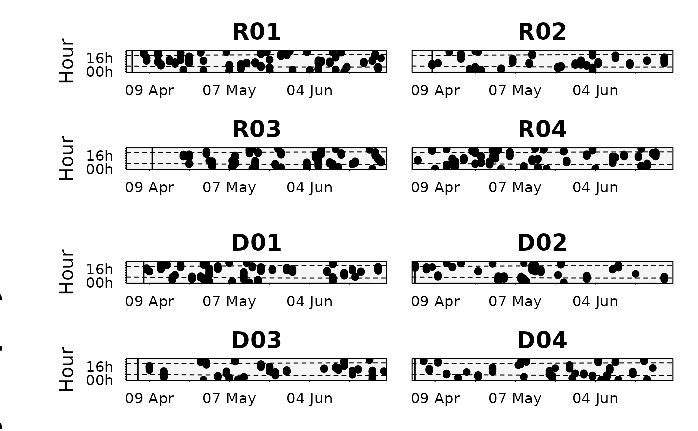

Produces an actogram: for each tagged individual, detections are plotted by
time-of-day (y) across the monitoring period (x), so diel patterns and their seasonal shift are
visible per animal. It is the raw, per-individual counterpart of plotChronogram
(which aggregates the population into a single panel). Detections can be coloured by any variable
(e.g. receiver or habitat) via color.by, animals can be grouped with id.groups, the diel
cycle (sunrise/sunset, optionally dawn/dusk) is overlaid, and each panel marks the release date
and, when tag.durations are supplied, the estimated tag-expiry date.
Usage
plotActograms(
data,
id.col = NULL,
datetime.col = NULL,
tagging.dates = NULL,
tag.durations = NULL,
id.groups = NULL,
discard.missing = TRUE,
color.by = NULL,
color.pal = NULL,
coords = NULL,
diel.lines = 2,
solar.depth = 18,
date.interval = "auto",
date.format = NULL,
date.start = 1,
pch = 16,
pt.cex = 1.6,
alpha = 1,
highlight.isolated = TRUE,
background.color = "grey96",
grid = FALSE,
grid.color = "white",
main = NULL,
legend = TRUE,
legend.cols = NULL,
ncol = NULL,
cex = 1,
file = NULL,
width = NULL,
height = NULL,
res = 300,
...
)Arguments
- data
A data frame containing animal detections.
- id.col
Name of the column containing animal IDs. Defaults to
"ID".- datetime.col
Name of the column containing date-times in POSIXct format. Defaults to
"datetime".- tagging.dates
A POSIXct vector of tagging/release dates (single value or named by ID). Inherited from the
mobyDatametadata when available.- tag.durations
Optional numeric vector of estimated tag battery durations (in days), used to mark each animal's estimated tag-expiry date. Either a single value (applied to all IDs) or a named vector matching the IDs in
id.col.- id.groups
Optional named list of ID groups used to visually aggregate animals belonging to the same class (e.g. species, sex or age). Each element is a vector of IDs in that group.
- discard.missing
Logical. If TRUE (default), animals without detections are omitted; if FALSE, an empty panel is drawn for each.
- color.by
Name of the column used to colour-code detections (e.g. station or habitat). If NULL, all detections are drawn in a single colour and no colour legend is shown.
- color.pal
Colours used to plot detections, one per
color.bylevel. May be a plain vector (matched to the levels by position) or a named vector (matched by name). If NULL, a colourblind- safe palette is used (Okabe-Ito for up to 8 levels, HCL "Dark 3" beyond).- coords
Longitude/latitude (length-2 numeric, matrix or
SpatialPoints) used for the diel-phase times. Required only whendiel.lines > 0.- diel.lines
Number of diel-boundary lines to overlay: 0 (none), 2 (sunrise/sunset) or 4 (dawn, sunrise, sunset, dusk). Defaults to 2.
- solar.depth
Sun angle below the horizon (degrees) defining twilight. Defaults to 18.
- date.interval
Controls the x-axis date labels. Either
"auto"(default), which generates calendar-aligned "pretty" breaks appropriate to the temporal span, or a numeric value selecting every n-th formatted date (manual mode; used withdate.startanddate.format).- date.format
A date format (
strftime) for the x-axis labels. If NULL (default), it is chosen automatically in"auto"mode and falls back to"%b/%y"in manual mode.- date.start
Integer controlling label placement. In manual mode, the index of the first displayed date. In
"auto"mode, a phase/offset that re-anchors the automatically chosen labels within each period (e.g. for yearly labels it selects the month). Defaults to 1.- pch
Plotting symbol for detections. Defaults to 16 (filled circle).
- pt.cex
Expansion factor for the detection points. Defaults to 1.6.
- alpha
Opacity of the detection points, from 0 (transparent) to 1 (opaque). Defaults to 1.
- highlight.isolated
Logical. If TRUE (default) and
color.byis set, isolated detections are brought forward (plotted on top) so they are not hidden behind denser point clusters.- background.color
Background colour of each panel. Defaults to "grey96".
- grid
Logical; draw faint hour/date guide lines. Defaults to FALSE.
- grid.color
Colour of the grid lines. Defaults to "white".
- main
Optional overall title above the whole panel.
- legend
Logical. If TRUE (default) and
color.byis set, a colour legend is drawn.- legend.cols
Integer number of columns for the
color.bylegend. If NULL (default), chosen automatically.- ncol
Number of columns in the panel grid. If NULL (default), set automatically (1 for a single individual, 2 otherwise).
- cex
Global expansion factor applied to all plot text. Point size is controlled separately via
pt.cex. Defaults to 1.- file
Optional output file. If
NULL(the default), the figure is drawn on the current graphics device - the usual interactive behaviour. If a file path is supplied, moby opens a graphics device chosen from the file extension (.pdf,.svg,.png,.jpg/.jpeg,.tif/.tiffor.bmp), draws the figure to it, and closes the device automatically (also if an error occurs). For multi-page or batch workflows, keepfile = NULLand manage the device yourself (e.g.pdf(...); plot...(); dev.off()).- width, height
Output size in inches. Used only when
fileis supplied. IfNULL(default), a size is derived from the figure's structure (e.g. the number of individuals or panels). These defaults are sensible starting points, not guarantees: dense or unusual figures may still need you to setwidth/heightexplicitly. The two can be set independently.- res
Resolution in pixels per inch, for raster formats only (
.png,.jpg,.tif,.bmp); ignored for vector formats (.pdf,.svg). Used only whenfileis supplied. Defaults to 300.- ...
Further graphical parameters passed to
points.
Details
Panels are laid out in the order of id.groups (and, within a group, in the factor-level
order of id.col); to reorder, reorder the id.col factor levels or the IDs within id.groups.
Date-axis labels are, by default, chosen automatically to suit the temporal span of the data (from
a few days to several years), with calendar-aligned breaks. Supplying a numeric date.interval
switches to manual mode, where every n-th formatted date (per date.format, starting at
date.start) is labelled. The timezone for the time-of-day axis is taken from the data.
Examples
# per-individual actograms with the diel cycle overlaid
# (coordinates are required to compute sunrise/sunset times)
plotActograms(rays, coords = c(-9, 38.4))
#> Warning: - 'id.col' converted to factor.
#>
#> Actogram plot
#> ------------------------------------------------------
#> Individuals: 8 (2 groups)
#> Detections: 1,643
#> Period: 2023-04-01 to 2023-06-30 (90 d)
#> Diel: 2 lines
#> Date axis: auto -> weekly ("%d %b")
#> Legend: none
#> ------------------------------------------------------
